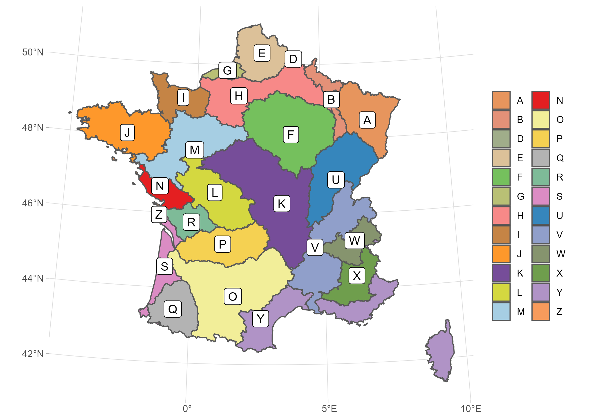

The INRAE hydrology team has collected and formatted hydroclimatic data on over 3890 ctachments area in France.
These data are presented summarize has graphical sheets.
If you use these graphical sheets, please use the following reference to cite them in your publications:
DOI: https://doi.org/10.15454/UV01P1.
For any request or to report an error, contact Olivier Delaigue (firstname.lastname@inrae.fr).
The first letter of the station codes is linked to the hydrological regions displayed on the following map.

A022020001 - L'Augraben à Hégenheim
A022065001 - Le ruisseau le Liesbach à Blotzheim